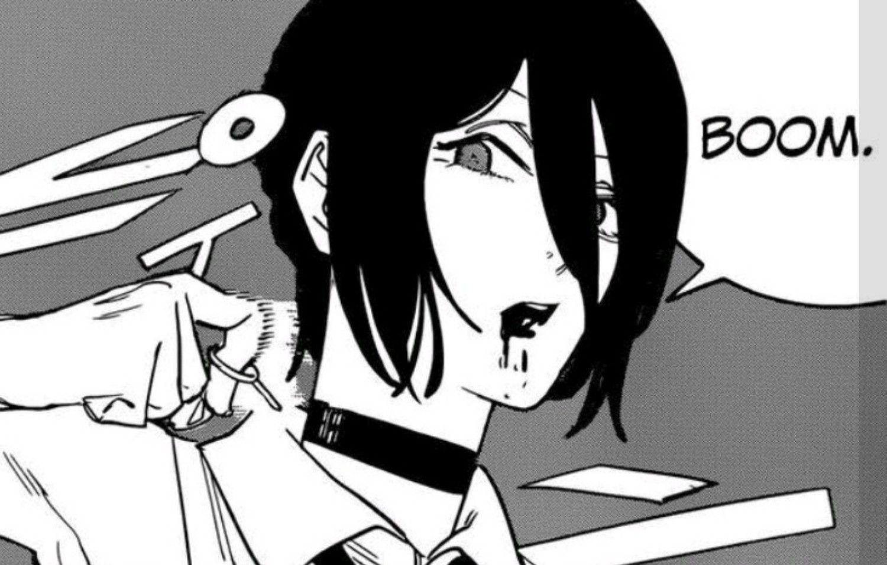

REVIEW
Johsua Lopez April 22, 2026

Chainsaw Man - The Movie: Reze Arc is a movie that stands out to me because it mixes action, emotion, and suspense really well. The movie keeps the energy high, but it also gives Denji more depth as a character. I liked how the story balanced intense fight scenes with quieter moments that made the relationships feel more important.
One of my favorite parts of the movie is how Reze changes the tone of the story. She makes the movie feel more emotional and unpredictable at the same time. I also liked the animation and the darker atmosphere because they matched the tension of the story. Overall, I think this movie is exciting, memorable, and a great part of the Chainsaw Man series. Also Props to Mappa, they managed to make the most out of a few chaapters of the manga.
Trivia
- The movie focuses on the Reze Arc from the Chainsaw Man story.
- MAPPA is the animation studio behind the film.
- Reze is voiced by Reina Ueda in the Japanese cast.